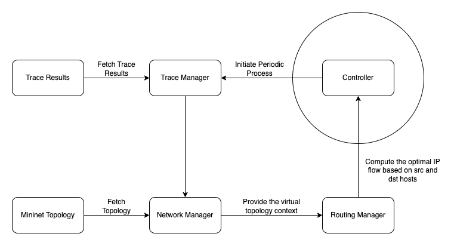

Modules
The following is the design of the emulator, and corresponding modules elaborated in detail.
Modules (High-Level Modules)

Activity (Low-Level Design)
Periodic Process Loop
Controller: The controller spawns the periodic thread, that is responsible for initiating the process loop.
Trace Manager: The trace manager fetches the next measurement required from the trace results data file.
Network Manager: The network manager fetches the link state topology from the mininet emulator, and constructs a virtual graph network.
Routing Manager: The routing manager is responsible for creating a optimal route path from the given virtual topology and the network measurements from the trace manager. The routing manager passes the optimal route path to the controller, where the controller sets these paths between the given path nodes using open flow protocol.